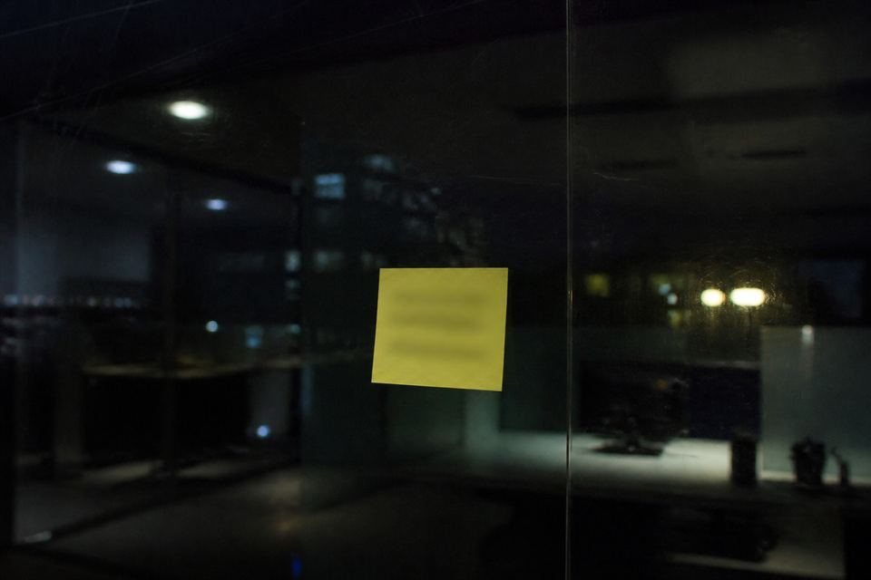

Ugly hand · three lines are enough

Lan Huai’s hand is ugly. Three lines on the slip: marriage papers need names aligned. Names aligned means household, genealogy, lodging-release. Night window only recommends. Do not promise an original.
Last month two cases bounced, both a new household name fighting an old genealogy name. She was afraid another bounce would land on her shift, so she wrote it this short.
The slip can be a ruler. It cannot prove he is already aligned. If he cites the shift lead in confront, point with the three columns. Do not point with temper.
When she left she also said: if he comes again after 20:00, let night-check. Promise an original and she will scold. A scold is uglier than a bounce. A bounce is easier to fix than a false align.
Scan · not already aligned
The circle she drew is oil pen. The glass kept a ring shadow. A shadow is not the third column already aligned.
“Do not promise an original” is jabbed at the end. Promise is an oral yes. An oral yes and issuing a receipt from oral talk are the same class of wrong.